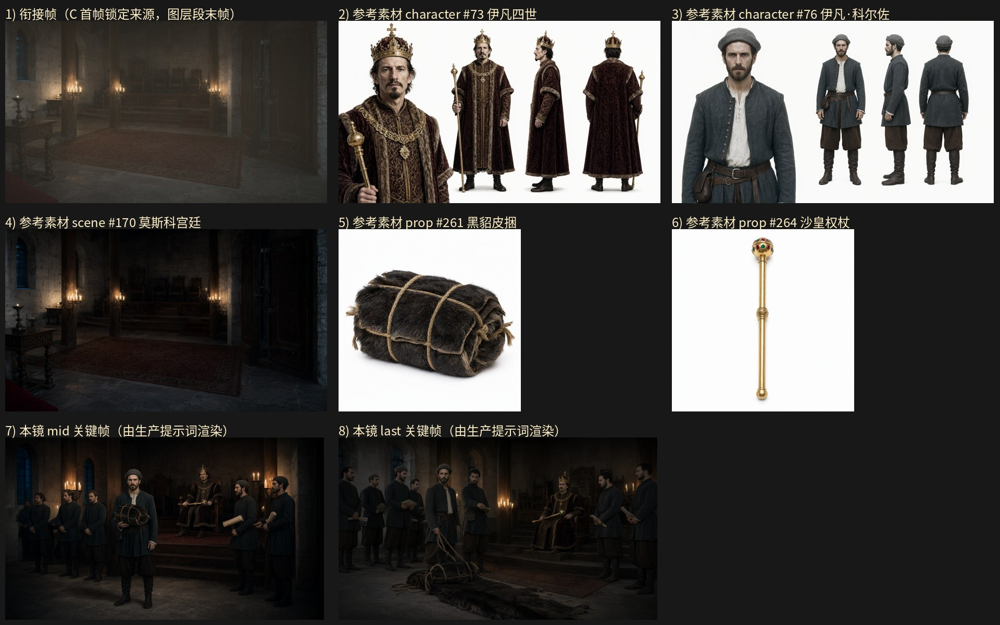

旁白：小伊汇报了攻占喀什里克的战果，并将战利品展示出来的时刻，沙皇本人和整个俄国宫廷都震惊了。
设计卡预算：layer 5.2 s + gen 5.5 s；mid_frame_time（OLD）2.5 s
NEW 原地重写：关键帧任务墙钟 30.0s / 3 次调用 / 峰值提示词 70356 tokens / 完成 1631 tokens；视频任务墙钟 50.1s / 3 次调用 / 峰值提示词 71963 tokens / 完成 3049 tokens；保存 成功
NEW-scratch：关键帧任务墙钟 40.0s / 3 次调用 / 峰值提示词 66694 tokens / 完成 1777 tokens；视频任务墙钟 45.0s / 3 次调用 / 峰值提示词 68915 tokens / 完成 2420 tokens；保存 成功

（空）
@莫斯科宫廷，1582年冬的夜晚，成排蜡烛与铁环烛台发出暖黄局部照明，墙面与拱窗边缘泛橙，高顶与墙角沉入深暗，明暗对比强烈，16:9 横构图电影感剧照。中景平视固定机位，取接见厅的阶梯式木质高台前：画面右后方是雕花木座与铺开的深红褐色花纹地毯，画面中部偏左是踩实的石砌地面，粗木柱与窄格拱形窗分立两侧。@伊凡·科尔佐 立在画面中央偏左的阶前地面上，身体正面朝向画外右侧的木座方向、略微侧身，右手提着一只 @黑貂皮捆 的捆绳把它举到胸前、捆身三段粗麻绳扎结朝向镜头、毛面朝外清楚可见，左手托着捆身下缘，双腿分开站稳、两只皮靴落在石地面上清晰可见，下颌抬起、眉骨压低，视线投向画外右侧的木座，嘴唇抿平。@伊凡四世 坐在雕花木座上、上身绷直前倾、脊背离开椅背，右手握着 @沙皇权杖 的杖身中段把杖横在膝前、杖头镶宝石的多面球饰停在胸前位置、杖身中段的雕花凸环握位清楚可见，左手掌心按在座椅扶手上、五指扣住扶手沿，双腿并拢、两只靴尖落在台阶石面上可见，下颌抬起、眼皮微垂、嘴唇抿成一条线，目光落在阶前那只皮捆上。阶下两侧立着几名宫廷侍从与廷臣（深灰无纹长袍、无冠束发、腰束布带，共六人）成列站定：左侧两人各自双手垂在身前交握、双腿并拢站定，右侧两人一人双手各捧着一卷摊开的卷纸举在胸前、另一人右手指尖虚搭在身侧的烛台铁环上，其余两人半隐在木柱的暗影里，所有人身形都朝向阶前的那只皮捆。烛焰的暖光从侧面照亮皮捆的毛面与阶上的人脸，其余陈设沉入暗部，人物、木座、杖与皮捆全部完整入画，构图平稳清晰、层次分明。16:9 横构图电影感剧照，单帧静态画面
@莫斯科宫廷，1582年冬的夜晚，成排蜡烛与铁环烛台发出暖黄局部照明，墙面与拱窗边缘泛橙，高顶与墙角沉入深暗，明暗对比强烈，16:9 横构图电影感剧照。中景平视固定机位，取接见厅阶前的一刻：画面右后方是雕花木座与阶梯式木质高台、铺开的深红褐色花纹地毯，画面中部偏左的石砌地面上摊开着一只散开的 @黑貂皮捆，毛面朝外、深褐近黑的皮张铺开在地面上、三段粗麻绳松开垂在皮捆一侧清楚可见，旁边还立着两只捆扎完好的 @黑貂皮捆。@伊凡·科尔佐 立在画面中央偏左、落在皮捆旁侧，身体略侧向镜头、正面朝向画外右侧的木座，右手扶着散开的 @黑貂皮捆 的捆绳、手指扣在麻绳上，左手自然垂在体侧，双腿分开站稳、两只皮靴落在石地面上清晰可见，下颌抬起、眉骨压低、嘴唇抿平，目光投向阶上的木座。@伊凡四世 坐在雕花木座上、上身绷直前倾，左手掌心按在座椅扶手上、五指扣住扶手沿，右手握着 @沙皇权杖 的杖身中段把杖横在膝前、杖头镶宝石的多面球饰停在胸前位置、杖身中段的雕花凸环握位清楚可见，双腿并拢、两只靴尖落在台阶石面上可见，下颌抬起、眼皮微垂，目光俯向阶前摊开的皮毛，嘴唇抿成一条线。阶下两侧的宫廷侍从与廷臣（深灰无纹长袍、无冠束发、腰束布带，共六人）成列站定，各自双腿并拢、双手垂在身前交握或捧着摊开的卷纸，头都转向地面上摊开的皮张，其中一人右手抬起虚指地面，肩背前倾。烛焰的暖光从侧面照亮地面上的皮毛与阶上的人脸，其余陈设沉入暗部，人物、木座、权杖与皮毛全部完整入画，构图平稳清晰、层次分明，姿态稳定可被下一镜直接承接。16:9 横构图电影感剧照，单帧静态画面
出场人物：@伊凡四世、@伊凡·科尔佐；场景：@莫斯科宫廷；道具：@黑貂皮捆、@沙皇权杖。 0-1秒：@莫斯科宫廷，全景平视固定机位，画面极缓推进，昏暗的接见厅石室：前景左侧是木桌与燧台，地面铺开大片红褐地毯，中景两根石柱上的烛架点亮，后方高台上排列木椅，右侧一扇深色木门，左墙有拱窗，暖黄烛光与冷灰石墙形成对比，右侧门边与上方偏暗留白，画面无人。 1-4秒：@莫斯科宫廷，切到接见厅中景平视固定机位，画面右后方是高台与雕花木座，粗木柱与窄格拱形窗分立两侧，深红褐色花纹地毯自画面下缘铺开；@伊凡·科尔佐 从画面右侧走入阶前站定，双腿分开站稳、两只皮靴落在石地面上清晰可见，右手提着一只 @黑貂皮捆 的捆绳把捆身举到胸前、毛面朝外、三段粗麻绳扎结朝向镜头，左手托着捆身下缘，下颌抬起、眉骨压低，目光投向画外右上方的木座；@伊凡四世 坐在雕花木座上、上身绷直前倾，右手握着 @沙皇权杖 的杖身中段把杖横在膝前、杖头镶宝石的多面球饰停在胸前、杖身中段的雕花凸环握位清楚可见，左手掌心按在座椅扶手上，双腿并拢、两只靴尖落在台阶石面上可见，目光落向阶前那只皮捆，嘴唇抿成一条线；阶下两侧宫廷侍从（深灰无纹长袍、无冠束发、腰束布带，共四人）成列站定，各自双腿并拢、双手垂在身前交握，头都转向那只皮捆。 4-7.5秒：@莫斯科宫廷，切到阶前地面近景平视固定机位，画面中部的石砌地面上摊开着散开的 @黑貂皮捆，深褐近黑的皮张摊平铺开、三段粗麻绳松开垂在一侧，旁边立着两只捆扎完好的 @黑貂皮捆；@伊凡·科尔佐 立在画面中央偏左的皮捆旁，身体侧向镜头、正面朝向画外右侧的木座，右手扶着散开那只 @黑貂皮捆 的捆绳、手指扣在麻绳股上，左手垂在体侧，双腿分开站稳、两只皮靴落在石地面上可见，抬头望向阶上的木座，下颌抬起、嘴唇抿平；@伊凡四世 坐在木座上、上身继续前倾，右手仍握着 @沙皇权杖 的杖身中段、杖头球饰停在胸前，左手按在扶手上，眼皮微垂、眉骨压低，视线钉在地面上摊开的皮毛上；阶下的侍从把头都探向地面，一人右手抬起虚指皮张。 7.5-10.5秒：@莫斯科宫廷，切回接见厅中景平视固定机位，画面右后方是雕花木座与阶梯式高台，粗木柱与窄格拱形窗分立两侧；@伊凡四世 的身子再向前一倾、脊背离开椅背，右手把 @沙皇权杖 的杖身中段往膝上一压、杖头镶宝石的多面球饰压低在胸前，左手五指扣紧扶手沿，双腿并拢、两只靴尖落在台阶石面上可见，下颌抬起、眉骨舒展、眼睛睁大，嘴唇微张，目光紧盯着地面上的皮捆；@伊凡·科尔佐 仍立在皮捆旁、身体略侧向镜头，右手扶着那一只散开 @黑貂皮捆 的捆绳、左手垂在体侧，双腿分开站稳、两只皮靴落在石地面上可见，头抬起望向阶上，嘴唇抿平；阶下两侧的侍从与几名廷臣（深灰无纹长袍、无冠束发、腰束布带，共六人）成列站定，各自双腿并拢、双手垂在身前交握，一人右手抬起虚指地面，头都转向摊开的毛面。 10.5-13.5秒：@莫斯科宫廷，切到地面铺开的皮毛束侧向中景平视固定机位，画面中部与右侧是成捆的皮毛在地面上排成一片，两只宫廷侍从（深灰无纹长袍、无冠束发、腰束布带）分别屈膝蹲在皮捆两旁：左侧一人双膝着地、两条小腿向后收在身下、两只靴底落在石地面上可见，双手各抓住散开的 @黑貂皮捆 的两端把皮张摊平、头低向毛面；右侧一人同样屈膝蹲稳、双脚收在身下，双手把另一只 @黑貂皮捆 的捆绳向外解开、五指扣在绳结上；@伊凡·科尔佐 立在皮捆旁侧、身形位于画面中央偏左，右手扶着散开那只 @黑貂皮捆 的捆绳、左手垂在体侧，双腿分开站稳、两只皮靴踩在石地面上可见，下颌抬起、嘴唇抿平，目光投向画外右侧；画面右后方高台上的 @伊凡四世 坐在雕花木座上、上身绷直前倾，右手握着 @沙皇权杖 的杖身中段横在膝前、杖头球饰停在胸前，左手按在扶手上，眼皮微垂，目光俯向地面摊开的整片皮毛。 13.5-16.5秒：@莫斯科宫廷，切回接见厅中景平视固定机位，画面右后方是雕花木座、粗木柱与窄格拱形窗；@伊凡·科尔佐 立在阶前皮毛堆旁、身形位于画面中央偏左，身体略侧向镜头、正面朝向画外右侧的木座，右手扶着散开那只 @黑貂皮捆 的捆绳、手指扣在麻绳股上，左手垂在体侧，双腿分开站稳、两只皮靴落在石地面上清晰可见，下颌抬起、眉骨压低、嘴唇抿平；@伊凡四世 坐在木座上、上身绷直前倾、脊背离开椅背，左手掌心按在木座扶手上、五指扣住扶手沿，右手握着 @沙皇权杖 的杖身中段把杖横在膝前、杖头镶宝石的多面球饰停在胸前位置、杖身中段的雕花凸环握位清楚可见，双腿并拢、两只靴尖落在台阶石面上可见，下颌抬起、眼皮微垂，目光俯向阶前摊开的皮毛，嘴唇抿成一条线；阶下两侧的宫廷侍从与廷臣（深灰无纹长袍、无冠束发、腰束布带，共五人）成列站定，各自双腿并拢、双手垂在身前交握，一人右手虚指地面，头都转向摊开的皮张，无人出声。 16.5-19.5秒：@莫斯科宫廷，仍取接见厅中景平视固定机位，镜头缓慢推近画面中央偏右的木座，画面右后方是雕花木座与高台，粗木柱与窄格拱形窗分立两侧，画面中部偏左的石砌地面上摊开着一只散开的 @黑貂皮捆、深褐近黑的皮张摊平铺开、三段粗麻绳松开垂在一侧，旁边立着两只捆扎完好的 @黑貂皮捆；@伊凡·科尔佐 立在画面中央偏左的皮捆旁，身体略侧向镜头、正面朝向画外右侧的木座，右手扶着散开的 @黑貂皮捆 的捆绳、手指扣在麻绳股上，左手自然垂在体侧，双腿分开站稳、两只皮靴落在石地面上清晰可见，下颌抬起、眉骨压低、嘴唇抿平，目光投向阶上的木座；@伊凡四世 坐在雕花木座上、上身绷直前倾，左手掌心按在座椅扶手上、五指扣住扶手沿，右手握着 @沙皇权杖 的杖身中段把杖横在膝前、杖头镶宝石的多面球饰停在胸前位置、杖身中段的雕花凸环握位清楚可见，双腿并拢、两只靴尖落在台阶石面上可见，下颌抬起、眼皮微垂，目光俯向阶前摊开的皮毛，嘴唇抿成一条线；阶下两侧的宫廷侍从与廷臣（深灰无纹长袍、无冠束发、腰束布带，共六人）成列站定，各自双腿并拢、双手垂在身前交握或捧着摊开的卷纸，头都转向地面上摊开的皮张，一人右手抬起虚指地面，肩背前倾；烛焰的暖光从侧面照亮地面上的皮毛与阶上的人脸，其余陈设沉入暗部。
2.5 秒
（空）
@莫斯科宫廷，1582年冬的夜晚，成排蜡烛与铁环烛台发出暖黄局部照明，墙面与拱窗边缘泛橙，高顶与墙角沉入深暗，明暗对比强烈，16:9 横构图电影感剧照。中景平视固定机位，取接见厅的阶梯式木质高台前：画面右后方是雕花木座与铺开的深红褐色花纹地毯，画面中部偏左是踩实的石砌地面，粗木柱与窄格拱形窗分立两侧。@伊凡·科尔佐 立在画面中央偏左的阶前地面上，身体正面朝向画外右侧的木座方向、略微侧身，右手提着一只 @黑貂皮捆 的捆绳把它举到胸前、捆身三段粗麻绳扎结朝向镜头、毛面朝外清楚可见，左手托着捆身下缘，双腿分开站稳、两只皮靴落在石地面上清晰可见，下颌抬起、眉骨压低，视线投向画外右侧的木座，嘴唇抿平。@伊凡四世 坐在雕花木座上、上身绷直前倾、脊背离开椅背，右手握着 @沙皇权杖 的杖身中段把杖横在膝前、杖头镶宝石的多面球饰停在胸前位置、杖身中段的雕花凸环握位清楚可见，左手掌心按在座椅扶手上、五指扣住扶手沿，双腿并拢、两只靴尖落在台阶石面上可见，下颌抬起、眼皮微垂、嘴唇抿成一条线，目光落在阶前那只皮捆上。阶下两侧立着几名宫廷侍从与廷臣（深灰无纹长袍、无冠束发、腰束布带，共六人）成列站定：左侧两人各自双手垂在身前交握、双腿并拢站定，右侧两人一人双手各捧着一卷摊开的卷纸举在胸前、另一人右手指尖虚搭在身侧的烛台铁环上，其余两人半隐在木柱的暗影里，所有人身形都朝向阶前的那只皮捆。烛焰的暖光从侧面照亮皮捆的毛面与阶上的人脸，其余陈设沉入暗部，人物、木座、杖与皮捆全部完整入画，构图平稳清晰、层次分明。16:9 横构图电影感剧照，单帧静态画面
@莫斯科宫廷，1582年冬的夜晚，成排蜡烛与铁环烛台发出暖黄局部照明，墙面与拱窗边缘泛橙，高顶与墙角沉入深暗，明暗对比强烈，16:9 横构图电影感剧照。中景平视固定机位，取接见厅阶前的一刻：画面右后方是雕花木座与阶梯式木质高台、铺开的深红褐色花纹地毯，画面中部偏左的石砌地面上摊开着一只散开的 @黑貂皮捆，毛面朝外、深褐近黑的皮张铺开在地面上、三段粗麻绳松开垂在皮捆一侧清楚可见，旁边还立着两只捆扎完好的 @黑貂皮捆。@伊凡·科尔佐 立在画面中央偏左的皮捆旁侧，身体略侧向镜头、正面朝向画外右侧的木座，右手扶着散开的 @黑貂皮捆 的捆绳、手指扣在麻绳股上，左手自然垂在体侧，双腿分开站稳、两只皮靴落在石地面上清晰可见，下颌抬起、眉骨压低、嘴唇抿平，目光投向阶上的木座。@伊凡四世 坐在雕花木座上、上身绷直前倾、脊背离开椅背，左手掌心按在座椅扶手上、五指扣住扶手沿，右手握着 @沙皇权杖 的杖身中段把杖横在膝前、杖头镶宝石的多面球饰停在胸前位置、杖身中段的雕花凸环握位清楚可见，双腿并拢、两只靴尖落在台阶石面上可见，下颌抬起、眼皮微垂，目光俯向阶前摊开的皮毛，嘴唇抿成一条线。阶下两侧的宫廷侍从与廷臣（深灰无纹长袍、无冠束发、腰束布带，共六人）成列站定，各自双腿并拢、双手垂在身前交握或捧着摊开的卷纸，头都转向地面上摊开的皮张，其中一人右手抬起虚指地面，肩背前倾。烛焰的暖光从侧面照亮地面上的皮毛与阶上的人脸，其余陈设沉入暗部，人物、木座、权杖与皮毛全部完整入画，构图平稳清晰、层次分明，姿态稳定可被下一镜直接承接。16:9 横构图电影感剧照，单帧静态画面
出场人物：@伊凡四世、@伊凡·科尔佐；场景：@莫斯科宫廷；道具：@黑貂皮捆、@沙皇权杖。 0-1秒：@莫斯科宫廷，全景平视固定机位，镜头静止，昏暗石室：前景左侧木桌与烛台，地面铺开大片红褐地毯，中景两根石柱上烛架点亮，后方高台上排列木椅，右侧为深色木门，左墙有拱窗，暖黄烛光与冷灰石墙形成对比，右侧门边与上方偏暗留白，画面无人。 1-2.5秒：接在空镜之后，切到接见厅中景平视固定机位，@莫斯科宫廷 的阶梯式木质高台与雕花木座位于画面右后方，粗木柱与窄格拱形窗分立两侧，深红褐色花纹地毯自画面下缘铺开；@伊凡·科尔佐 从画面左侧走入阶前站定，身形位于画面中央偏左，身体正面朝向画外右侧的木座、略微侧身，右手提着一只 @黑貂皮捆 的捆绳把捆身举到胸前、毛面朝外、三段粗麻绳扎结朝向镜头清楚可见，左手托着捆身下缘，双腿分开站稳、两只皮靴落在石地面上清晰可见，下颌抬起、眉骨压低、嘴唇抿平，目光投向画外右侧的木座；烛焰的暖黄光从侧面照亮皮捆的毛面。 2.5-5.5秒：@莫斯科宫廷，仍取接见厅中景平视固定机位，@伊凡·科尔佐 立在阶前、身形位于画面中央偏左，右手把那只 @黑貂皮捆 的捆绳略向上提了半寸把捆身端正在胸前、毛面与三段粗麻绳扎结清楚可见，左手托着捆身下缘，双腿分开站稳、两只皮靴踩在石地面上可见，下颌抬起、嘴唇开合向阶上回话；画面右后方高台上，@伊凡四世 坐在雕花木座上、上身绷直前倾、脊背离开椅背，右手握着 @沙皇权杖 的杖身中段把杖横在膝前、杖头镶宝石的多面球饰停在胸前位置、杖身中段的雕花凸环握位清楚可见，左手掌心按在座椅扶手上、五指扣住扶手沿，双腿并拢、两只靴尖落在台阶石面上可见，眼皮微垂、嘴唇抿成一条线，目光落在阶前那只皮捆上；阶下两侧立着几名宫廷侍从与廷臣（深灰无纹长袍、无冠束发、腰束布带，共六人）成列站定，各自双腿并拢、双手垂在身前交握或捧着摊开的卷纸，头都转向阶前那只皮捆；烛焰暖光从侧面照亮皮捆与阶上的人脸，其余陈设沉入暗部。 5.5-8.5秒：@莫斯科宫廷，切到阶前地面的近景平视固定机位，画面中部的石砌地面上摊开着一只散开的 @黑貂皮捆，深褐近黑的皮张摊平铺开、三段粗麻绳松开垂在皮捆一侧清楚可见，旁边还立着两只捆扎完好的 @黑貂皮捆；@伊凡·科尔佐 立在画面中央偏左的皮捆旁，身体侧向镜头、正面朝向画外右侧的木座，右手扶着散开那只 @黑貂皮捆 的捆绳、手指扣在麻绳股上，左手自然垂在体侧，双腿分开站稳、两只皮靴踩在石地面上可见，抬头望向阶上的木座，嘴唇抿平；阶下侍从的头都探向地面摊开的皮张，一人右手抬起虚指皮张，肩背前倾。 8.5-11.5秒：@莫斯科宫廷，切回接见厅中景平视固定机位，画面右后方是雕花木座与阶梯式高台；@伊凡四世 的身子再向前一倾、脊背离开椅背，右手把 @沙皇权杖 的杖身中段往膝上一压、杖头镶宝石的多面球饰压低在胸前，左手五指扣紧扶手沿，双腿并拢、两只靴尖落在台阶石面上可见，下颌抬起、眉骨舒展、眼睛睁大、嘴唇微张，目光紧盯着地面上摊开的皮捆；@伊凡·科尔佐 仍立在皮捆旁、身体略侧向镜头，右手扶着那只散开的 @黑貂皮捆 的捆绳、左手垂在体侧，双腿分开站稳、两只皮靴落在石地面上可见，头抬起望向阶上；阶下两侧的宫廷侍从与廷臣（深灰无纹长袍、无冠束发、腰束布带，共六人）成列站定，各自双腿并拢、双手垂在身前交握，一人右手抬起虚指地面，头都转向摊开的毛面，无人出声。 11.5-14.5秒：@莫斯科宫廷，切到地面皮毛的侧向中景平视固定机位，画面中部与右侧是成捆的皮毛在地面上排成一片，两只宫廷侍从（深灰无纹长袍、无冠束发、腰束布带）分别屈膝蹲在皮捆两旁：左侧一人双膝着地、两条小腿向后收在身下、两只靴底落在石地面上可见，双手各抓住散开的 @黑貂皮捆 的两端把皮张摊平、头低向毛面；右侧一人同样屈膝蹲稳、双脚收在身下，双手把另一只 @黑貂皮捆 的捆绳向外解开、五指扣在绳结上；@伊凡·科尔佐 立在皮捆旁侧、身形位于画面中央偏左，右手扶着散开那只 @黑貂皮捆 的捆绳、左手垂在体侧，双腿分开站稳、两只皮靴踩在石地面上可见，下颌抬起、嘴唇抿平，目光投向画外右侧；画面右后方高台上，@伊凡四世 坐在雕花木座上、上身绷直前倾，右手握着 @沙皇权杖 的杖身中段横在膝前、杖头球饰停在胸前，左手按在扶手上，眼皮微垂，目光俯向地面摊开的整片皮毛。 14.5-16.7秒：@莫斯科宫廷，切回接见厅中景平视固定机位，镜头极缓推近画面中央偏左的皮毛堆，画面右后方是雕花木座与阶梯式木质高台、铺开的深红褐色花纹地毯，粗木柱与窄格拱形窗分立两侧；画面中部偏左的石砌地面上摊开着一只散开的 @黑貂皮捆，毛面朝外、深褐近黑的皮张摊平铺开、三段粗麻绳松开垂在皮捆一侧清楚可见，旁边立着两只捆扎完好的 @黑貂皮捆；@伊凡·科尔佐 立在画面中央偏左的皮捆旁，身体略侧向镜头、正面朝向画外右侧的木座，右手扶着散开的 @黑貂皮捆 的捆绳、手指扣在麻绳股上，左手自然垂在体侧，双腿分开站稳、两只皮靴落在石地面上清晰可见，下颌抬起、眉骨压低、嘴唇抿平，目光投向阶上的木座；@伊凡四世 坐在雕花木座上、上身绷直前倾、脊背离开椅背，左手掌心按在木座扶手上、五指扣住扶手沿，右手握着 @沙皇权杖 的杖身中段把杖横在膝前、杖头镶宝石的多面球饰停在胸前位置、杖身中段的雕花凸环握位清楚可见，双腿并拢、两只靴尖落在台阶石面上可见，下颌抬起、眼皮微垂，目光俯向阶前摊开的皮毛，嘴唇抿成一条线；阶下两侧的宫廷侍从与廷臣（深灰无纹长袍、无冠束发、腰束布带，共六人）成列站定，各自双腿并拢、双手垂在身前交握或捧着摊开的卷纸，头都转向地面上摊开的皮张，其中一人右手抬起虚指地面，肩背前倾；烛焰的暖光从侧面照亮地面上的皮毛与阶上的人脸，其余陈设沉入暗部，画面平稳清晰。
2.5 秒
（空）
@莫斯科宫廷，1582年冬的夜晚，成排蜡烛与铁环烛台发出暖黄局部照明，墙面与拱窗边缘泛橙，高顶与墙角沉入深暗，明暗对比强烈，16:9 横构图电影感剧照。中景平视固定机位，取 @莫斯科宫廷 接见厅阶前地面的一刻：画面中部偏左的深红褐色花纹地毯前的石砌地面上摊着一只散开的 @黑貂皮捆，深褐近黑的皮张摊平铺开、三段粗麻绳松开垂在皮捆一侧清楚可见，旁侧立着一只捆扎完好的 @黑貂皮捆、毛面朝向镜头。画面左侧与右侧各有一名宫廷侍从（深灰无纹长袍、无冠束发、腰束布带，共四人）围在皮捆旁：左侧一人屈膝蹲下、双膝着地、两条小腿向后收在身下、两只靴底落在石地面上可见，双手把皮捆的捆绳向外解开、五指扣在麻绳结上，头低向毛面；右侧一人同样屈膝蹲稳、双脚收在身下，双手托起摊开的皮张一端、头低看毛面；另两人立在两人身后的木柱旁，各自双腿并拢站定、双手垂在身前交握，头都转向地面的皮捆。@伊凡·科尔佐 立在画面中央偏左的皮捆后侧，身体正面朝向画外右侧的高台方向、略微侧身，右手扶着散开那只 @黑貂皮捆 的捆绳、手指扣在麻绳股上，左手自然垂在体侧，双腿分开站稳、两只皮靴落在石地面上清晰可见，下颌抬起、嘴唇抿平，视线投向阶上。@伊凡四世 坐在画面右后方的雕花木座上、上身绷直前倾、脊背离开椅背，右手握着 @沙皇权杖 的杖身中段把杖横在膝前、杖头镶宝石的多面球饰停在胸前位置、杖身中段的雕花凸环握位清楚可见，左手掌心按在木座扶手上、五指扣住扶手沿，双腿并拢、两只靴尖落在台阶石面上可见，眉骨舒展、眼睛睁大，目光俯向阶前被围看的皮捆，嘴唇微张。烛焰的暖光从侧面照亮摊开的毛面与围看众人的脸，其余陈设沉入暗部。人物、木座、权杖与皮捆全部完整入画，构图平稳清晰、层次分明。16:9 横构图电影感剧照，单帧静态画面
@莫斯科宫廷，1582年冬的夜晚，成排蜡烛与铁环烛台发出暖黄局部照明，墙面与拱窗边缘泛橙，高顶与墙角沉入深暗，明暗对比强烈，16:9 横构图电影感剧照。中景平视固定机位，取 @莫斯科宫廷 接见厅阶前的一刻：画面右后方是阶梯式木质高台与雕花木座、铺开的深红褐色花纹地毯；画面中部偏左的地面上摊开一只散开的 @黑貂皮捆，深褐近黑的皮张摊平铺开、三段粗麻绳松开垂在皮捆一侧清楚可见，旁侧还立着两只捆扎完好的 @黑貂皮捆，捆身毛面朝向镜头。@伊凡·科尔佐 立在皮捆旁侧、身形位于画面中央偏左，身体正面朝向画外右侧的木座、略微侧身，右手扶着散开那只 @黑貂皮捆 的捆绳、手指扣在麻绳股上，左手自然垂在体侧，双腿分开站稳、两只皮靴落在石地面上清晰可见，下颌抬起、嘴唇抿平，目光投向阶上的木座。@伊凡四世 坐在雕花木座上、上身绷直前倾、脊背离开椅背，右手握着 @沙皇权杖 的杖身中段把杖横在膝前、杖头镶宝石的多面球饰停在胸前位置、杖身中段的雕花凸环握位清楚可见，左手掌心按在木座扶手上、五指扣住扶手沿，双腿并拢、两只靴尖落在台阶石面上可见，眉骨舒展、眼睛睁大、嘴唇微张，目光紧盯着阶前摊开的皮捆。画面右侧几名宫廷侍从（深灰无纹长袍、无冠束发、腰束布带，共三人）半围着皮捆站定，一人双腿分开站稳、右手抬起虚指地面上的皮张，另两人各自双腿并拢、双手垂在身前交握，三人的头都转向地上的皮捆。烛焰的暖光从侧面照亮皮捆的毛面与阶上的人脸，其余陈设沉入暗部。人物、木座、权杖与皮捆全部完整入画，构图平稳清晰、层次分明，画面稳定、可被下一镜直接当作开场。16:9 横构图电影感剧照，单帧静态画面
出场人物：@伊凡四世、@伊凡·科尔佐；场景：@莫斯科宫廷；道具：@黑貂皮捆、@沙皇权杖。 0-1秒：@莫斯科宫廷，全景平视固定机位，镜头静止，昏暗石室：前景左侧木桌与烛台，地面铺开大片红褐地毯，中景两根石柱上烛架点亮，后方高台上排列木椅，右侧为深色木门，左墙有拱窗，暖黄烛光与冷灰石墙形成对比，右侧门边与上方偏暗留白，画面无人。 1-2.5秒：@莫斯科宫廷，切到接见厅高台阶前的中景平视固定机位，成排蜡烛与铁环烛台发出暖黄局部照明，墙面与拱窗边缘泛橙，高顶与墙角沉入深暗；@伊凡·科尔佐 立在画面中央偏左的高台阶前，身体正面朝向画外右侧的木座、略微侧身，右手把一只 @黑貂皮捆 的捆绳提起、捆身举到胸前、毛面朝外、三段粗麻绳扎结朝向镜头清楚可见，左手托着捆身下缘，双腿并拢站稳、两只皮靴落在石地面上清晰可见，下颌抬起、嘴唇抿平，视线投向阶上的木座；@伊凡四世 坐在雕花木座上、上身绷直前倾、脊背离开椅背，右手握着 @沙皇权杖 的杖身中段把杖横在膝前、杖头镶宝石的多面球饰停在胸前位置、杖身中段的雕花凸环握位清楚可见，左手掌心按在木座扶手上、五指扣住扶手沿，双腿并拢、两只靴尖落在台阶石面上可见，眼皮微垂，目光落在阶前那只皮捆上；阶下两侧立着几名宫廷侍从（深灰无纹长袍、无冠束发、腰束布带，共五人）成列站定，各自双腿并拢、双手垂在身前交握，头都转向阶前的那只皮捆。 2.5-5.5秒：@莫斯科宫廷，切到阶前地面的中景平视固定机位，烛焰的暖光从侧面照亮摊开的毛面与围看众人的脸；一名宫廷侍从（深灰无纹长袍、无冠束发、腰束布带）走到画面中部偏左的那只 @黑貂皮捆 旁屈膝蹲下、双膝着地、两条小腿向后收在身下、两只靴底落在石地面上可见，双手把皮捆的捆绳向外解开、五指扣在麻绳结上，将深褐近黑的皮张摊平铺开在石砌地面上、三段粗麻绳松开垂在皮捆一侧清楚可见；@伊凡·科尔佐 立在皮捆旁侧、身形位于画面中央偏左，右手扶着散开那只 @黑貂皮捆 的捆绳、手指扣在麻绳股上，左手自然垂在体侧，双腿分开站稳、两只皮靴落在石地面上清晰可见，下颌抬起、嘴唇抿平，目光投向阶上的木座；@伊凡四世 坐在画面右后方的雕花木座上、上身绷直前倾、脊背离开椅背，右手握着 @沙皇权杖 的杖身中段把杖横在膝前、杖头镶宝石的多面球饰停在胸前位置、杖身中段的雕花凸环握位清楚可见，左手掌心按在木座扶手上、五指扣住扶手沿，双腿并拢、两只靴尖落在台阶石面上可见，眉骨舒展、眼睛睁大、嘴唇微张，目光紧盯着阶前摊开的皮捆；旁侧还立着两只捆扎完好的 @黑貂皮捆、毛面朝向镜头，画面右侧几名宫廷侍从（深灰无纹长袍、无冠束发、腰束布带，共三人）半围着皮捆站定，一人双腿分开站稳、右手抬起虚指地面上的皮张，另两人各自双腿并拢、双手垂在身前交握，三人的头都转向地上的皮捆，众人目光都落在摊开的皮捆上，画面平稳收住。
2.5 秒